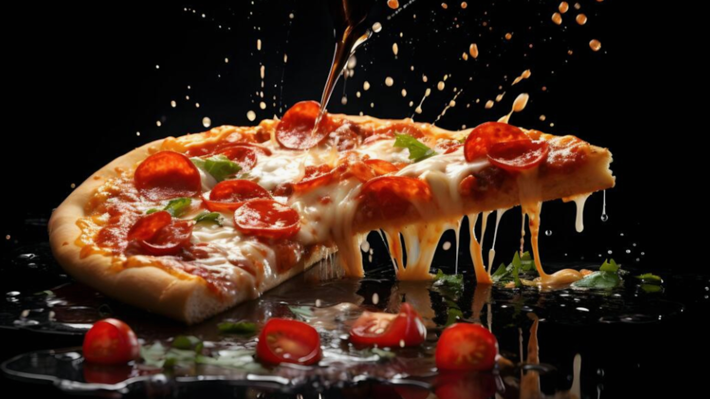

Cooking Corner

Pizza-Teig
Zutaten
500g Mehl Typ 00
650ml Wasser (Raumtemperatur)
2g Trockenhefe
1 Esslöffel Salz (gehäuft)
2 Esslöffel Olivenöl
650ml Wasser (Raumtemperatur)
2g Trockenhefe
1 Esslöffel Salz (gehäuft)
2 Esslöffel Olivenöl
Zubereitung
Hefe im Wasser auflösen und langsam im Mehl einkneten.
Wenn der Teig geschmeidig ist Salz und Öl für ca. 15 Minuten einkneten.
Anschließend abgedeckt 1 Stunde gehen lassen.
Danach für 24 Stunden im Kühlschrank gehen lassen und 1 Mal falten.
Weitere 24 Stunden im Kühlschrank gehen lassen und Teiglinge formen.
Wieder gehen lassen und belegen. Mit der Hand vorsichtig die Pizzen formen - nicht ausrollen!
Wenn der Teig geschmeidig ist Salz und Öl für ca. 15 Minuten einkneten.
Anschließend abgedeckt 1 Stunde gehen lassen.
Danach für 24 Stunden im Kühlschrank gehen lassen und 1 Mal falten.
Weitere 24 Stunden im Kühlschrank gehen lassen und Teiglinge formen.
Wieder gehen lassen und belegen. Mit der Hand vorsichtig die Pizzen formen - nicht ausrollen!